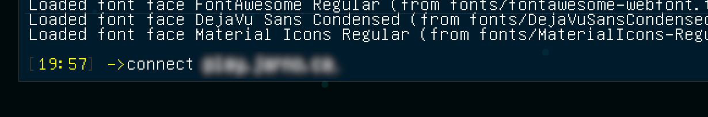

Tips
-
As humans you can buy upgraded weapons at the armory. Get close
and press Q to activate. You can also become an engineer and build
defences or repair stuff.
-
As aliens you can evolve anywhere by pressing Q. They also have an
engineer class that can build structures.
Connecting
Set your in-game name by clicking on "Player" under "Options".
To connect to the server, press ~ to open the console and type "connect {{ site.content.domain_name }}"
